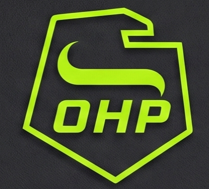
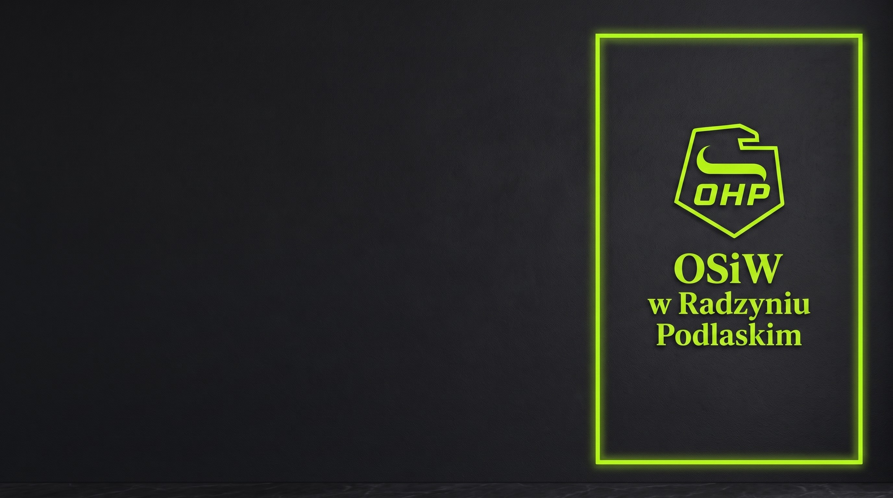
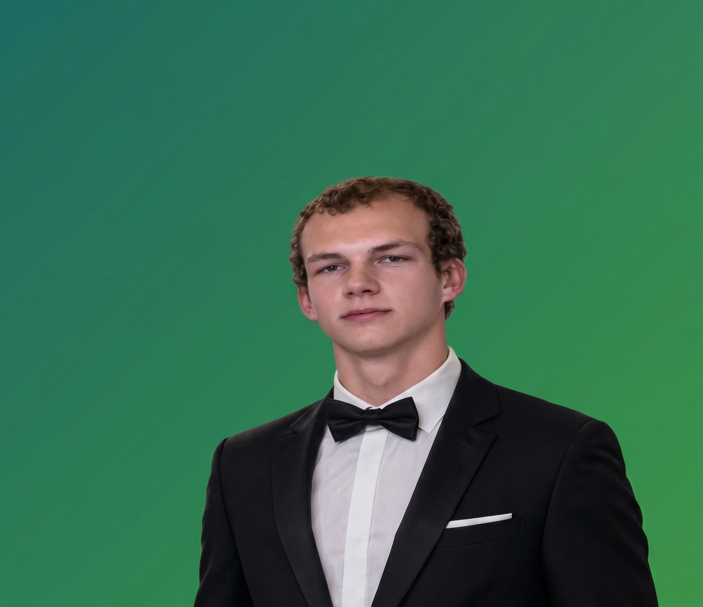

INTEGRACJA
Wspólne wydarzenia, turnieje i spotkania budujące zgrany zespół.


KANDYDACI DO RADY MŁODZIEŻY OSIW
Jedność · Rozwój · Działanie
Jesteśmy zespołem aktywnych wychowanków OSIW w Radzyniu Podlaskim, którzy chcą, aby życie w naszym ośrodku było ciekawsze, wygodniejsze i pełne możliwości. Stawiamy na realne działania, organizację wydarzeń, otwartą komunikację z dyrekcją i głos każdego uczestnika. Bez zbędnych obietnic — liczą się pomysły i efekty!
Wspólne wydarzenia, turnieje i spotkania budujące zgrany zespół.
Dbamy o komfort, przestrzeń wspólną i dobre samopoczucie w ośrodku.
Ciekawy program zajęć, mecze, gry i aktywne wieczory.
Każdy pomysł i uwaga są dla nas ważne — przekazujemy Wasz głos wyżej.

KANDYDAT NR 01
Kandydat, który nie lubi pustych słów. Stawia na konkretne pomysły, analityczne podejście, dobrą organizację i aktywne życie w OSIW. Jego celem jest stworzenie miejsca, w którym każdy uczestnik ma wpływ na to, co dzieje się wokół niego.
SKONTAKTUJ SIĘ →KANDYDAT NR 02
Kandydat, który wierzy, że najlepsze zmiany zaczynają się od ludzi. Otwarty na nowe pomysły, gotowy słuchać i działać. Chce, aby codzienne życie w ośrodku było ciekawsze, bezpieczne i pełne nowych możliwości.
SKONTAKTUJ SIĘ →Prezentacja kół zainteresowań, warsztatów oraz zajęć dodatkowych dostępnych w ośrodku.
Turniej tenisa stołowego oraz siatkówki na świeżym powietrzu dla wszystkich wychowanków.
Wieczór gier planszowych we wspólnej sali (Catan, Uno, Monopoly).
Wspólny seans popularnego filmu z popkornem w przytulnej atmosferze.
Tablica z miłymi wiadomościami, gdzie każdy może zostawić anonimowe wsparcie dla innych.
Uroczyste spotkanie, życzenia oraz podziękowania dla kadry pedagogicznej.
Mistrzostwa w gry wideo (FIFA / Mortal Kombat) na konsoli.
Konkurs na najciekawiej wyciętą dynię oraz jesienna strefa do zdjęć.
Dzień tematyczny, w którym można przyjść w przebraniu ulubionego bohatera filmowego.
Warsztaty i dyskusja na temat wzajemnego szacunku i dobrej atmosfery w grupie.
Drużynowy turniej wiedzy (Kahoot) o muzyce, trendach i popkulturze.
Tradycyjny wieczór wróżb i zabawy. Wspólne lanie wosku, przepowiednie z kart oraz integracyjny wieczór z muzyką.
Wzajemne wręczanie drobnych, anonimowych upominków.
Wspólne tworzenie ozdób i dekorowanie przestrzeni wspólnych w OSIW.
Konkurs na najbardziej kolorowy lub zabawny sweter zimowy.
Spotkanie przy herbacie, podsumowanie dotychczasowych osiągnięć i wyróżnienia.
Tworzenie map marzeń (Vision Boards) i planowanie celów na nowy rok.
Turniej szachowy i warcabowy dla miłośników gier logicznych.
Dzień komfortu w domowych ubraniach z gorącą czekoladą.
Warsztaty na temat segregacji śmieci i dbania o środowisko w codziennym życiu.
Słodki dzień z pączkami oraz wesoły konkurs na najszybsze zjedzenie pączka.
Skrzynka na miłe wiadomości, podziękowania i karty dla przyjaciół.
Dzień tematyczny z motywem przewodnim z danej epoki (lata 90., retro).
Wieczór karaoke i prezentacja talentów muzycznych.
Niespodzianki, życzenia i drobne akcenty dla dziewcząt w ośrodku.
Otwarta dyskusja na aktualne tematy (technologia, przyszłe zawody).
Aktywności na świeżym powietrzu i wspólny piknik.
Konkurs fotograficzny na najlepsze zdjęcie z życia w OSIW.
Wieczór humoru i wystawa zabawnych memów o życiu w ośrodku.
Zabawne konkurencje sportowe (przeciąganie liny, sztafety).
Akcja ekologiczna — sadzenie kwiatów i porządkowanie terenu wokół ośrodka.
Wystawa prac twórczych wychowanków (rysunki, rękodzieło, zdjęcia).
Wspólne grillowanie na świeżym powietrzu przy muzyce.
Dzień gier planszowych i rozmów na żywo bez telefonów.
Dynamiczne rozgrywki sportowe na boisku.
Gry plenerowe i aktywne spędzanie czasu na świeżym powietrzu.
Szkolne zawody sportowe i turniej zespołowy na zakończenie sezonu.
Integracja na świeżym powietrzu, gry plenerowe i odpoczynek przed wakacjami.
Prezentacja osiągnięć wychowanków oraz wręczenie podziękowań za aktywność w całym roku.
Wręczenie pamiątkowych dyplomów, uroczyste podsumowanie roku oraz pożegnanie wychowanków.
Prezentacja kół zainteresowań i zajęć.
Turniej tenisa stołowego i siatkówki.
Wieczór gier we wspólnej sali.
Seans filmowy z popkornem.
Tablica z miłymi wiadomościami.
Uroczyste spotkanie i podziękowania.
Mistrzostwa w gry wideo (FIFA / Mortal Kombat).
Konkurs na wyciętą dynię i strefa zdjęć.
Dzień przebrań filmowych.
Warsztaty i dyskusja o wzajemnym szacunku.
Turniej wiedzy o popkulturze i trendach.
Tradycyjny wieczór wróżb i zabawy.
Wzajemne wręczanie upominków.
Tworzenie ozdób i dekorowanie OSIW.
Konkurs na najzabawniejszy sweter.
Spotkanie przy herbacie i wyróżnienia.
Tworzenie map marzeń (Vision Boards).
Mistrzostwa w szachy i warcaby.
Dzień komfortu i gorącej czekolady.
Warsztaty segregacji śmieci.
Słodki dzień z pączkami.
Skrzynka na miłe wiadomości i karty.
Dzień tematyczny w stylu retro.
Karaoke i prezentacja talentów.
Niespodzianki i życzenia dla dziewcząt.
Dyskusja na aktualne tematy.
Aktywności na świeżym powietrzu.
Konkurs na najlepsze zdjęcie z OSIW.
Wieczór humoru i wystawa memów.
Zabawne konkurencje sportowe.
Sadzenie kwiatów i porządkowanie terenu.
Wystawa prac twórczych wychowanków.
Wspólne grillowanie przy muzyce.
Dzień gier planszowych bez telefonów.
Rozgrywki sportowe na boisku.
Gry plenerowe na świeżym powietrzu.
Zawody sportowe na koniec roku.
Integracja i odpoczynek przed wakacjami.
Prezentacja osiągnięć i podziękowania.
Wręczenie dyplomów i uroczyste zakończenie.
WSPARCIE DLA INICJATYWY
Razem tworzymy dobrą atmosferę w OSIW Radzyń Podlaski.

05.09.2026
Przedstawiamy nasz pełny program wydarzeń na cały rok szkolny w OSIW Radzyń Podlaski.

12.09.2026
Rozmawiamy o Waszych potrzebach i zbieramy pomysły do kalendarza wydarzeń.
20.09.2026
Sprawdź, co planujemy dla Was na nadchodzące miesiące.
MASZ POMYSŁ? NAPISZ DO NAS!
Masz propozycję wydarzenia, uwagę lub pytanie do kandydatów? Wypełnij formularz — odpowiemy jak najszybciej!